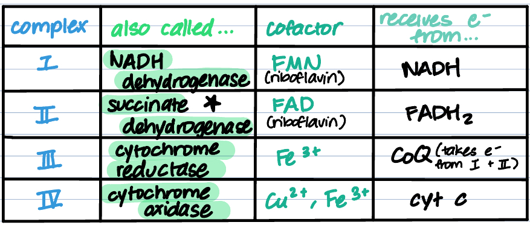
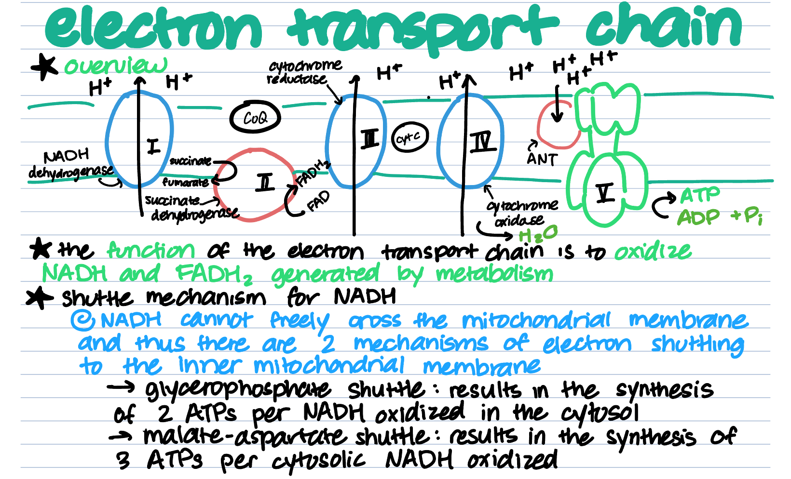

We're heading down the electron transport chain! The ETC comprises the final step in cellular respiration, generating boatloads of ATP through a series of complexes. All of the electron carriers, NADH and FADH2 generated from other pathways are used here, to power this chain reaction. It takes place in the inner mitochondrial membrane. Let's head deeper into the path.
This pathway is a chain reaction where an electron is passed through a series of 4 complexes, catalyzing redox reactions involving NADH and FADH2. Oxygen accepts the electron after it passes through the chain. Then, a hydrogen ion gradient forms in the intermembrane space, powering the 5th complex, which is where all the ATP is generated. But what are these "complexes"? Where do they get the electrons from? Let's take a look a the table below to get a better picture.

| Complex V makes up the chemiosmotic half of the chain. It does not receive electrons, but rather pumps the hydrogen ions in the intermembrane space from the oxidized NAD+s and FADs down its concentration gradient, back into the inner membrane, generating ATP in the process. Complex V is called ATP synthase. |
That's right. No direct activators of enzymes here. The ETC is a little different-- remember, it's mainly just passing an electron down a series of channels so that oxygen can accept it. The extra hydrogens that were pumped into the intermembrane space are then used by ATP synthase to bring them back in and make energy. So, really there are 2 parts to the entire process that can be "messed with."
So, inhibitors "mess with" the electron transport from complex to complex (I-IV).
Uncouplers "mess with" the hydrogen ion gradient required to make energy at complex V (ATP synthase).
| Molecule | Inhibitor or Uncoupler? | How it Works |
|---|---|---|
| Thermogenin | Uncoupler | Increases the rate of the ETC and pumps hydrogen ions back into the matrix without generating ATP (blocks ATP synthase due to lack of substrate and H+ gradient) |
| Antimycin A | Inhibitor | Decreases activity of cytochrome reductase/complex III |
| Barbiturate amytal | Inhibitor | Decreases activity of NADH dehydrogenase/complex I |
| 2,4 dinitrophenol | Uncoupler | Increases the permeability of the inner mitochondrial membrane, causing the ETC to run without the H+ gradient |
Take a look at this diagram with notes for better clarity!
